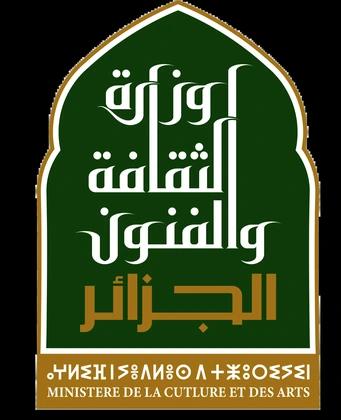

خبير 01
الصفة ومجال الخبرة قريباً.
الملف قريباً
FNAN
04 / 06
خبرات ورؤى تثري النقاش حول الفن والتكنولوجيا.
يجمع المهرجان نخبة من الفنانين والخبراء والمهنيين في المجال الثقافي، للمساهمة في إثراء برنامجه من خلال المؤتمرات واللقاءات الحوارية والورشات التطبيقية.
وتتيح هذه اللقاءات تبادل المعارف والخبرات وطرح رؤى متعددة حول تطور الفنون المرئية، والتجريب الفني، والتحولات التي تعرفها العلاقة بين الفن والتكنولوجيا.
المحاور الرئيسية
الصفة ومجال الخبرة قريباً.
الملف قريباًالصفة ومجال الخبرة قريباً.
الملف قريباًالصفة ومجال الخبرة قريباً.
الملف قريباًالصفة ومجال الخبرة قريباً.
الملف قريباًالصفة ومجال الخبرة قريباً.
الملف قريباًالصفة ومجال الخبرة قريباً.
الملف قريباً